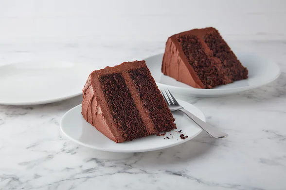

Delicious Chocolate Cake

Got a bunch of baking recipes but don't know what to make? Here is a delicious cake
nobody could resist! From beginners to experts, children to adults, the cake is sure
to disappear within minutes out of the oven.
INGREDIENTS
- 2 cups sugar
- 7/4 cups all-purpose flour
- 3/4 cups HERSHEY's cocoa
- 1/2 cups vegetable oil
- 1 cup milk
- 1 cup boiling water
- 3/2 tsps baking powder
- 3/2 tsps baking soda
- 2 tsps vanilla extract
STEPS
- Heat oven to 350°F. Grease and flour two 9-inch round baking pans.
- Stir together sugar, flour, cocoa, baking powder, baking soda and salt in large bowl. Add eggs, milk, oil and vanilla; beat on medium speed of mixer 2 minutes. Stir in boiling water (batter will be thin). Pour batter into prepared pans.
- Bake 30 to 35 minutes or until wooden pick inserted in center comes out clean. Cool 10 minutes; remove from pans to wire racks. Cool completely. Frost with "Perfectly Chocolate" Chocolate Frosting.
Back to Top
Back to Main